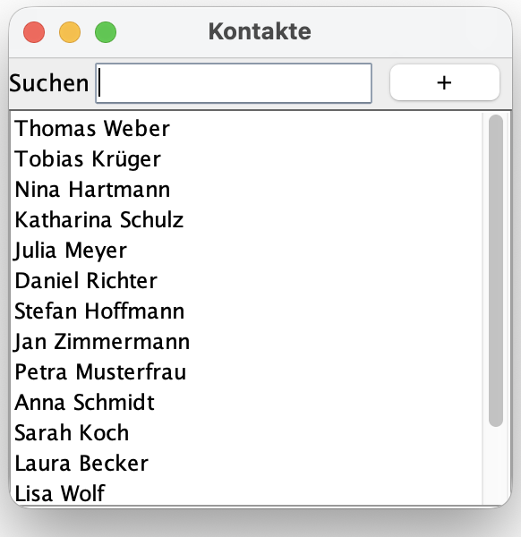
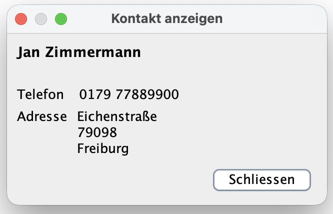

Praktikum 11: Grafische Oberflächen
In diesem Praktikum wollen wir grafische Benutzeroberflächen (engl. graphical user interfaces, GUI) in Java unter Nutzung der IDE IntelliJ IDEA und der Swing-Bibliothek gestalten und umsetzen.
🚀 Lernziele
Sie können:
- GUI-Layouts in Java Swing nach Vorgaben erstellen
- GUI-Komponenten (Buttons, Panels usw.) mit Java Swing darstellen
- Erste Views zur Darstellung von GUIs erstellen
🤔 Vorbereitung
Arbeiten Sie bitte nochmal die Vorlesungsunterlagen zum Thema Graphical User Interfaces (GUI) bis ca. zur Hälfte nach (siehe Lernraum).
Bringen Sie bitte Ihre Implementierungen der Klassen Contact, AddressBook und davon abhängende Klasse aus dem Praktikum 10 mit.
📝 Pflichtaufgaben (1 Bonuspunkt)
1 - Die Klasse AddressBookDialog
Dieses Projekt baut auf das vorhergehende Praktikum auf. Wir werden nun für unser Adressbuch eine grafische Darstellung mit Java Swing erstellen. Bearbeiten Sie dazu bitte die folgenden Teilaufgaben. Das Ergebnis soll in etwa wie folgt aussehen:

Teilaufgaben:
- Erstellen Sie eine Klasse AddressBookDialog, die von der Klasse JFrame erbt. Denken Sie daran, mit super() zunächst den Konstruktor der Basisklasse aufzurufen. Die weiteren Initialisierungen (siehe: folgenden Teilaufgaben) können Sie direkt im Konstruktur implementieren.
- Setzen Sie einen Titel für Ihre Anwendung mit setTitle. Setzen Sie die Größe Ihres Fenster mit setSize sowie den Ursprung durch setLocationRelativeTo(null). Fügen Sie alle weiteren Methoden aus, die für die Initialisieren einer GUI in Java Swing notwendig sind (siehe: Vorlesungsfolien).
- Nutzen Sie ein BorderLayout für den Dialog (gesamtes Fenster).
- Legen Sie als nächstes für die Suchleiste ein topPanel an (Typ JPanel). Setzen Sie auch hier das Layout auf BorderLayout. Fügen Sie für die Suchleiste ein JLabel mit der Aufschrift "Suchen" sowie ein JTextField hinzu. Daneben legen Sie bitte noch ein JButton mit der Aufschrift "+" an (Hierüber sollen später neue Kontakte angelegt werden). Wählen Sie für alle Komponenten des topPanel geeignete Ausrichtungen für das BorderLayout. Vergessen Sie nicht das topPanel noch dem Dialog hinzuzufügen (add(...)). Geben Sie dabei auch die Ausrichtung für das BorderLayout des topPanel relativ zum gesamten Fenster an.
-
Legen Sie als nächstes bitte ein JScrollPane an. Diese Swing-Komponente
ermöglicht uns, eine scrollbare Liste unserer Kontakte darzustellen. Das JScrollPane bekommt als
Parameter eine jList bspw. vom Typ String: JList<String>. Zur Erzeugung der
Elemente müssen wir ein eigenes ListModel von Swing verwenden. Hierüber soll eine Trennung der
Daten von der Darstellung ermöglicht werden. Orientieren Sie sich gern an der folgenden Vorlage:
JList<String> jList = new JList<>(); DefaultListModel<String> model = new DefaultListModel<>(); jList.setModel(model); for (Contact c : addressBook.getContacts()) { model.addElement(c.getFirstName() + " " + c.getLastName()); } JScrollPane listScroller = new JScrollPane(jList); // Denken Sie daran, listScroller noch Ihrem Fenster hinzuzufügen. - Legen Sie eine Main-Klasse sowie eine main-Methode in Main.java an. Erzeugen Sie ein leeres Addressbuch, fügen Sie Beispiel-Kontakte hinzu und instanziieren Sie dann Ihren neuen AddressBookDialog.
Hinweis: Das Suchfeld sowie den "+"-Button erstellen wir in diesem Praktikum nur. Die Funktionalitäten werden wir beim nächsten Praktikum erst umsetzen.
2 - Die Klasse ShowContactDialog
Wir werden nun einen weiteren Dialog vorbereiten, der Details von Kontakten darstellen soll. Dieser soll später aufgerufen werden, sobald Kontakte im AddressBookDialog doppelt geklickt werden (➔ Praktikum 12). In diesem Praktikum werden wir zunächst einmal die Darstellung vorbereiten. Bearbeiten Sie dazu bitte die folgenden Teilaufgaben. Das Ergebnis soll in etwa wie folgt aussehen:

Teilaufgaben:
- Erzeugen Sie eine Klasse ShowContactDialog, die von Jframe erbt. Der Konstruktor bekommt als Parameter einen Contact übergeben.
- Führen Sie wieder alle notwendigen Initialisierungen für das Fenster durch (siehe Aufgabe 1). Verwenden Sie für das Fenster bitte wieder das BorderLayout.
- Erstellen Sie ein weiteres JPanel contactView. Erstellen Sie hier mehrere JLabel, um alle Kontaktinformationen darzustellen (Vor-/Nachname, Adresse, Telefonnummer). Hier eignet sich auch das BoxLayout sehr gut. Zur besseren Strukturierung können Sie bspw. auch den JSeparator verwenden. Seien Sie hier kreativ und spielen Sie mit den verschiedenen Layout-Optionen.
- Testen Sie Ihre Klasse durch Aufruf von der Main-Klasse. Übergeben Sie einfach einen Kontakt exemplarisch aus Ihrem Adressbuch bzw. erzeugen Sie sich einen zum Testen.
Hinweis: Denken Sie bitte daran, dass es hier erstmal nur um die Vorbereitung der Views (Darstellungen) gehen soll. Um den Aufruf dieses Dialogs von der Liste kümmern wir uns im nächsten Praktikum.
⭐ Zusatzaufgaben (1 Bonuspunkt)
3 - Sortierte Darstellung von Kontakten
Überlegen Sie sich bitte ein pragmatisches Konzept, um Ihre Kontakte sortiert (z.B. nach Vorname) darzustellen. Sie dürfen dafür auch gern das Model (die Daten selbst) anpassen (=sortieren).
Hinweis: Die Sortierung aus der GUI heraus werden wir uns später noch ansehen.